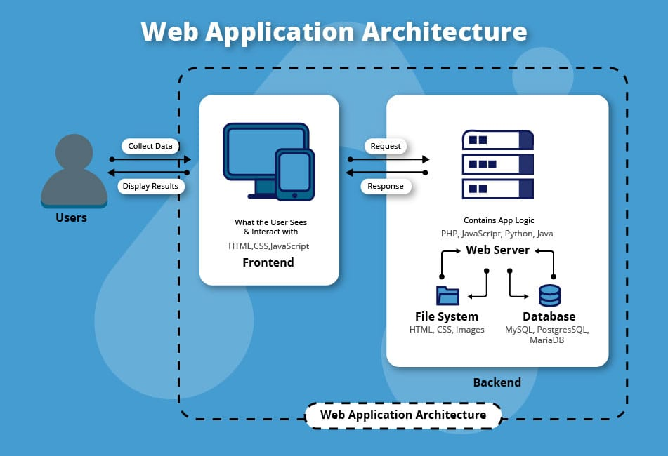

introduction Of Node.Js
What is Node.Js?
- Node.js is an open source server environment
- Node.js is free
- Node.js runs on various platforms (Windows, Linux, Unix, Mac OS X, etc.)
- Node.js uses JavaScript on the server
Exmaple:

Why use Node.js?
A common task for a web server can be to open a file on the server and return the content to the client.
Here is how PHP or ASP handles a file request:
- Sends the task to the computer's file system.
- Waits while the file system opens and reads the file.
- Returns the content to the client.
- Ready to handle the next request.
Here is how Node.js handles a file request:
- Sends the task to the computer's file system.
- Ready to handle the next request.
- When the file system has opened and read the file, the server returns the content to the client.
- Node.js eliminates the waiting, and simply continues with the next request.
Node.js runs single-threaded, non-blocking, asynchronous programming, which is very memory efficient.
What Can Node.js Do?
Node.js can generate dynamic page content
Node.js can create, open, read, write, delete, and close files on the server
Node.js can collect form data
Node.js can add, delete, modify data in your database
What is a Node.js File?
Node.js files contain tasks that will be executed on certain events
A typical event is someone trying to access a port on the server
Node.js files must be initiated on the server before having any effect
Node.js files have extension".js"
Node.js Comments
Comments are not displayed in the browser, but they can help document your source code.
// this is comment: